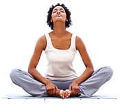
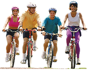

Tips for Increasing Your Physical Activity Level
Make physical activity a regular part of the day
Choose activities that you enjoy and can do regularly. Fitting activity into a daily routine can be easy — such as taking a brisk 10 minute walk to and from the parking lot, bus stop, or subway station. Or, join an exercise class. Keep it interesting by trying something different on alternate days. Every little bit adds up and doing something is better than doing nothing.
Make sure to do at least 10 minutes of activity at a time, shorter bursts of activity will not have the same health benefits. For example, walking the dog for 10 minutes before and after work or adding a 10 minute walk at lunchtime can add to your weekly goal. Mix it up. Swim, take a yoga class, garden or lift weights. To be ready anytime, keep some comfortable clothes and a pair of walking or running shoes in the car and at the office.
More ways to increase physical activity

- At home:
- Join a walking group in the neighborhood or at the local shopping mall. Recruit a partner for support and encouragement.
Push the baby in a stroller.
- Get the whole family involved — enjoy an afternoon bike ride with your kids.
- Walk up and down the soccer or softball field sidelines while watching the kids play.
- Walk the dog — don't just watch the dog walk.
- Clean the house or wash the car.
- Walk, skate, or cycle more, and drive less.
- Do stretches, exercises, or pedal a stationary bike while watching television.
- Mow the lawn with a push mower.
- Plant and care for a vegetable or flower garden.
- Play with the kids — tumble in the leaves, build a snowman, splash in a puddle, or dance to favorite music.
- Exercise to a workout video.
- At work:
- Get off the bus or subway one stop early and walk or skate the rest of the way.
- Replace a coffee break with a brisk 10-minute walk. Ask a friend to go with you.
- Take part in an exercise program at work or a nearby gym.
- Join the office softball team or walking group.

- At play:
- Walk, jog, skate, or cycle.
- Swim or do water aerobics.
- Take a class in martial arts, dance, or yoga.
- Golf (pull cart or carry clubs).
- Canoe, row, or kayak.
- Play racquetball, tennis, or squash.
- Ski cross-country or downhill.
- Play basketball, softball, or soccer.
- Hand cycle or play wheelchair sports.
- Take a nature walk.
- Most important — have fun while being active!